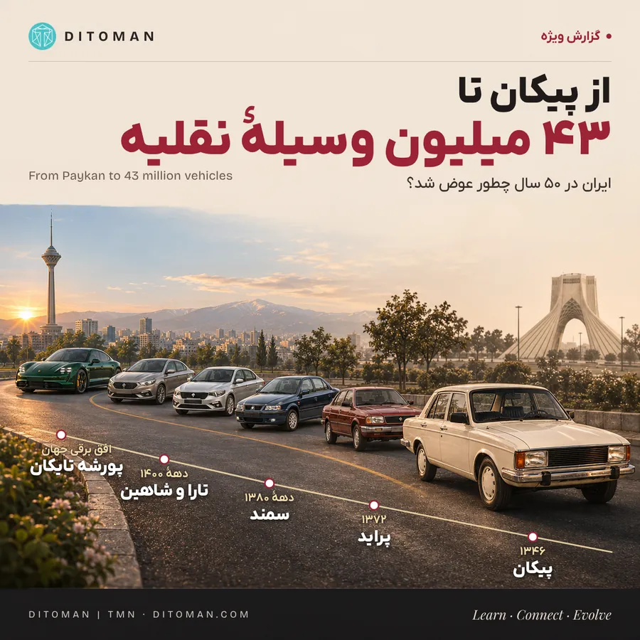
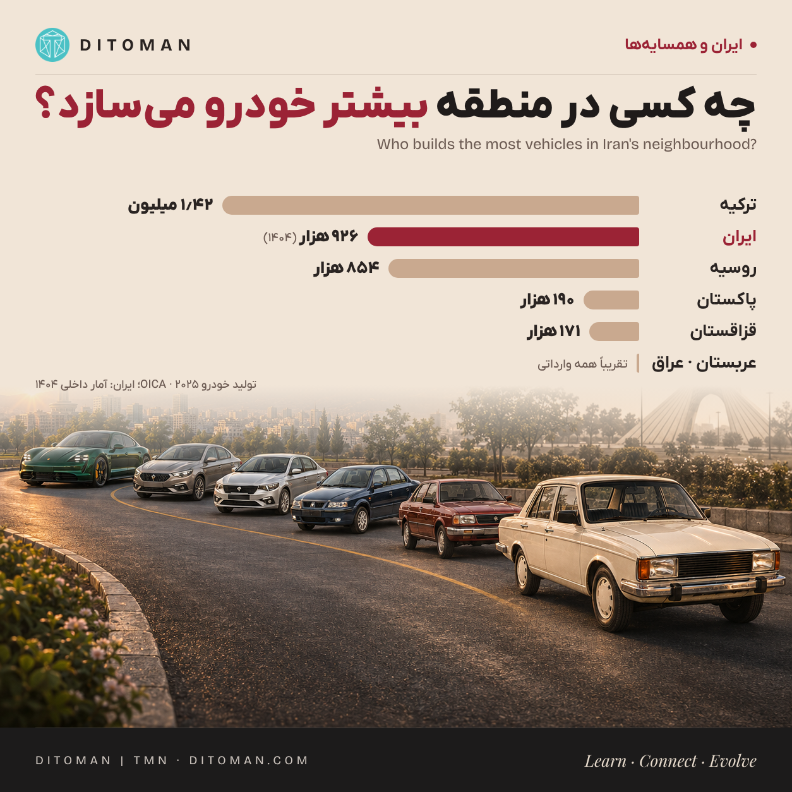

از پیکان تا ۴۳ میلیون وسیلهی نقلیه؛ ایران و همسایهها روی چرخ
From Paykan to 43 million vehicles: Iran and its neighbours on wheels
Iran's fleet, fifty years of making and importing vehicles, and how Türkiye, Russia, Pakistan, Saudi Arabia, Iraq and others compare in production, exports, imports and parts.
ناوگان ایران، پنجاه سال تولید و واردات، و مقایسه با ترکیه، روسیه، پاکستان، عربستان، عراق و دیگر همسایهها در تولید، صادرات، واردات و قطعه.
ایران ۴۳ میلیون وسیلهی نقلیه دارد. پس چرا ۶ خانوادهی روستایی از هر ۱۰ خانواده ماشین ندارند؟
جذابترین عدد برای شروع این است: ایران امروز حدود ۱۴ میلیون موتورسیکلت دارد. این عدد بیش از ۹ برابر کل خودروها و موتورسیکلتهایی است که پلیس میگوید تا سال ۱۳۵۷ شمارهگذاری شده بودند. در همان حال، طبق آمارگیری سال ۱۴۰۴، ۴۳٪ خانوارهای شهری و ۵۹٪ خانوارهای روستایی خودروی شخصی ندارند. این دو عدد کنار هم داستانی را تعریف میکنند که به زندگی مردم ربط دارد.
در این گزارش اول ناوگان ایران را میشماریم، بعد پنجاه سال تولید و واردات را مرور میکنیم و در آخر ایران را کنار همسایهها میگذاریم: ترکیه، روسیه، پاکستان، عربستان، عراق، قزاقستان و آذربایجان چقدر میسازند، چقدر صادر و چقدر وارد میکنند.
۰۱. الان چند ماشین، موتور، وانت و کامیون داریم؟
راهور در ۶ آبان ۱۴۰۵ از حدود ۲۹ میلیون خودرو و ۱۴ میلیون موتورسیکلت در حال تردد خبر داد. آمار شهریور امسال هم شمار سواریها را حدود ۲۴٫۲ میلیون اعلام کرده است. آخرین جدول تفکیکی سراسری که پیدا کردیم مربوط به مرداد ۱۴۰۴ است:
| نوع وسیله | تعداد (مرداد ۱۴۰۴) |
|---|---|
| سواری | ۲۲٫۴۷ میلیون |
| موتورسیکلت | ۱۳٫۶۶ میلیون |
| وانت | ۲٫۵۸ میلیون |
| کامیونت | ۵۵۸ هزار |
| کامیون | ۴۶۵ هزار |
| کشنده و تریلر | ۲۴۳ هزار |
| تاکسی درونشهری | ۳۱۳ هزار |
| اتوبوس و مینیبوس | ۶۶ هزار اتوبوس و ۱۱۱ هزار مینیبوس |
| تراکتور، کمباین و ماشینهای کشاورزی | ۶۷۰ هزار |
| آمبولانس و سایر کاربریها | حدود ۶۶ هزار |
| کل ناوگان | ۴۱٫۲۱ میلیون |
عددی که معمولاً گم میشود: وانت، کامیونت، کامیون و کشنده رویهم حدود ۳٫۸۵ میلیون دستگاهاند. پشت هر کدام یک راننده، یک بار و یک سفره است؛ همین ناوگان است که نان، دارو و مصالح را به هر شهر و روستا میرساند.
۰۲. پنجاه سال در چهار ایستگاه
- ۱۳۵۵ تا ۱۳۵۷: ایران در ۱۹۷۶ حدود ۶۰ هزار خودرو وارد کرد و در ۱۹۷۷ حدود ۱۳۲ هزار سواری در داخل ساخت. برآورد راهور از کل وسایل شمارهگذاریشده تا ۱۳۵۷: حدود ۱٫۵ میلیون.
- بعد از جنگ تا اوایل دههی ۹۰: دورهی بازسازی و رشد صنعت خودرو؛ تولید سالانه از ۱٫۰۸ میلیون دستگاه در ۲۰۰۵ به ۱٫۶۵ میلیون در ۲۰۱۱ رسید. در همان سال ۲۰۱۱، ترکیه حدود ۱٫۱۹ میلیون خودرو ساخت؛ یعنی ایران از همسایهی غربیاش جلوتر بود.
- ۱۳۹۳ تا ۱۴۰۱: واردات سواری در ۱۳۹۳ به حدود ۱۰۳ هزار رسید و از ۱۳۹۷ با محدودیت واردات سقوط کرد.
- ۱۴۰۴ و ۱۴۰۵: تولید ۱۴۰۴ به ۹۲۶ هزار خودرو رسید. در هفتماههی ۱۴۰۵ تولید سواری ۳۵۱ هزار دستگاه بود؛ حدود ۳۷٪ کمتر از مدت مشابه پارسال.
۰۳. چقدر ساختیم و چقدر وارد کردیم؟
- ساخت داخل: در چهار سال کامل ۱۴۰۱ تا ۱۴۰۴ حدود ۴٫۲۵ میلیون خودرو تولید شد. از ۹۲۶ هزار دستگاه سال ۱۴۰۴: حدود ۹۹ هزار وانت، ۲۸ هزار کامیون و کامیونت و کشنده، ۴ هزار ون، ۷۴۱ مینیبوس و میدلباس و ۹۴۱ اتوبوس.
- واردات سواری: حدود ۶۷ هزار دستگاه در ۱۴۰۴ به گزارش مرکز پژوهشهای مجلس؛ آمار «آخرین خودرو» ۷۱٬۵۳۵ دستگاه. ششماههی نخست ۱۴۰۵: ۲۷٬۱۳۱ دستگاه. از ۱۴۰۱ تا پایان شهریور ۱۴۰۵ جمعاً حدود ۱۷۰ هزار خودرو.
- ناوگان کاری: در ۱۴۰۴، ۸۸۲ میلیون دلار کامیون، کامیونت و کشنده و ۱۵۷ میلیون دلار اتوبوس، مینیبوس و ون وارد شد. آمار همدوره به تعداد دستگاه برای این گروهها پیدا نکردیم.
- موتورسیکلت: حدود ۱۸۱ هزار دستگاه در پنجماههی اول ۱۴۰۵ در برابر ۳۰۰ هزار در مدت مشابه پارسال؛ افتی حدود ۴۰٪. واردات موتورسیکلت کامل ممنوع است و ثبت سفارش فقط برای قطعات انجام میشود.
- قطعات: قطعهی وارداتی بیشتر از چین میآید. واردات قطعه از چین در ۲۰۲۴ با ۴۳٪ افت به ۶۵۳ میلیون دلار رسید (Bourse & Bazaar). در مقابل، صادرات خودرو و قطعهی ایران رویهم در ششماههی نخست ۱۴۰۴ فقط ۲۱٫۹ میلیون دلار بود؛ بیشتر به عراق و سوریه، و بخش قطعه به لطف بازار لوازم یدکی خودروهایی که سالها پیش صادر شدهاند، پایدارتر مانده است.
۰۴. همسایهها چه میکنند؟

عددهای تولید برای سال ۲۰۲۵ میلادی و از OICA (سازمان جهانی خودروسازان) است؛ عدد ایران برای سال ۱۴۰۴ و از آمار داخلی، چون OICA در جدول ۲۰۲۵ عددی برای ایران منتشر نکرده. تعریفها کاملاً یکسان نیست، ولی برای دیدن بزرگیها کافی است.
| کشور | تولید ۲۰۲۵ | بازار و واردات | صادرات | قطعه و نکته |
|---|---|---|---|---|
| ایران | ۹۲۶ هزار (سال ۱۴۰۴) | حدود ۶۷ تا ۷۲ هزار سواری وارداتی در ۱۴۰۴ | چند هزار خودرو در سال؛ خودرو و قطعه رویهم ۲۱٫۹ میلیون دلار در ششماههی ۱۴۰۴ | قطعات از چین: ۶۵۳ میلیون دلار در ۲۰۲۴ |
| ترکیه | ۱٫۴۲ میلیون (+۴٪) | فروش داخلی ۱٫۴۱ میلیون؛ فقط ۳۰٪ سواریها ساخت داخل | ۱٫۰۶ میلیون دستگاه؛ ۴۱٫۵ میلیارد دلار، بزرگترین بخش صادراتی کشور | قطعهسازان: ۱۵٫۷۷ میلیارد دلار صادرات (۳۸٪ کل) |
| روسیه | ۸۵۴ هزار (−۱۳٪) | فروش سواری نو ۱٫۳۳ میلیون (−۱۵٫۶٪)، با سهم بزرگ برندهای چینی | ناچیز | صادرات خودروی ترکیه به روسیه ۵۲٪ افت کرد |
| پاکستان | ۱۹۰ هزار (+۴۹٪) | فروش خودرو سال مالی ۲۰۲۴-۲۵: ۱۴۸ هزار | ناچیز | موتورسیکلت: ۱٫۴۳ میلیون در ۹ ماه |
| قزاقستان | ۱۷۱ هزار (+۱۸٪) | — | — | مونتاژ با شرکای کرهای و چینی |
| جمهوری آذربایجان | ۴٬۳۰۰ | — | — | خزر، خودروی مشترک با ایرانخودرو (بر پایهی دنا) |
| عربستان | تازه وارد تولید شده | ۸۵۷ هزار فروش (+۳٫۶٪)، بهترین سال در یک دهه؛ تقریباً همه وارداتی | — | کارخانههای لوسید، سیر و هیوندای در راه |
| عراق | تولید انبوه ندارد | فقط اقلیم کردستان: ۲۸۳ هزار خودروی وارداتی در ۲۰۲۵ | — | خودروی ژاپنی: ۷۰۰ میلیون دلار در ۲۰۲۴ |
- ترکیه، قهرمان صادرات: از هر چهار خودرویی که میسازد، سهتا را صادر میکند؛ ۷۲٫۵٪ آن به اتحادیهی اروپا و آلمان بهتنهایی ۶٫۶ میلیارد دلار. نکتهی جالب: بازار داخلی ترکیه بیشتر خودروی وارداتی میخرد. ترکیه هم صادرکنندهی بزرگ است و هم واردکنندهی بزرگ؛ یعنی کاملاً در زنجیرهی جهانی ادغام شده.
- قطعه، موتور پنهان: ۳۸٪ صادرات خودرویی ترکیه، یعنی ۱۵٫۷۷ میلیارد دلار، قطعه است، نه خودروی کامل. ارزش صادرات قطعهی ترکیه در یک سال، بیش از ۷۰۰ برابر صادرات ششماههی خودرو و قطعهی ایران است.
- روسیه: تولید ۱۳٪ و فروش ۱۵٫۶٪ افت کرد؛ بازار به برندهای چینی وابسته شده و تنها برند بزرگ داخلی لادا است.
- پاکستان: پس از چند سال رکود، تولید ۴۹٪ بالا رفت. بازارش با حدود ۱۵۰ هزار خودرو در سال کوچک است، ولی موتورسیکلت در آن پادشاه است: بیش از ۱٫۴ میلیون در ۹ ماه.
- عربستان: بزرگترین بازار وارداتی منطقه است و حالا با کارخانهی لوسید، برند ملی «سیر» و کارخانهی هیوندای وارد تولید شده.
- عراق: خودرو نمیسازد و یکی از بزرگترین بازارهای وارداتی منطقه است؛ فقط اقلیم کردستان ۲۸۳ هزار خودرو در یک سال وارد کرد.
- آذربایجان: کوچک است، ولی یک پیوند ایرانی دارد: خودروی «خزر» در کارخانهی مشترک آذرماش و ایرانخودرو در نفتچاله ساخته میشود.
- قزاقستان و آسیای مرکزی: قزاقستان ۱۷۱ هزار دستگاه ساخت (+۱۸٪) و ازبکستان، همسایهی همسایهها، ۴۶۲ هزار.
- افغانستان، ارمنستان، ترکمنستان و کشورهای جنوب خلیج فارس: تولید قابلتوجهی ندارند و خودرو را وارد میکنند؛ امارات هم بیشتر مرکز تجارت و صادرات مجدد خودرو است.
یک نکتهی دقیق
برای کل پنجاه سال، آمار همتعریفی که تولید و واردات همهی گروهها را سالبهسال جمع بزند پیدا نکردیم. ۱٫۵ میلیون برآورد تاریخی شمارهگذاری تا ۱۳۵۷ است و ۴۳ میلیون برآورد امروز راهور از ناوگان در حال تردد. هر دو بزرگی تغییر را نشان میدهند، با همین تفاوت در تعریف. برای کشورهای همسایه هم آمار تجارت قطعه بهتفکیک کشور را فقط برای ترکیه پیدا کردیم.
۰۵. فرصتها: همسایهها برای ایران چه معنایی دارند؟
- بازار نزدیک: عراق، افغانستان، آسیای مرکزی و قفقاز خودرو وارد میکنند و خودروی ایرانی را میشناسند. هزاران خودروی ایرانی در عراق، سوریه و آذربایجان در حال کارند و هر کدام مشتری قطعه و خدماتاند.
- قطعه پیش از خودرو: تجربهی ترکیه نشان میدهد صادرات قطعه میتواند به اندازهی خودروی کامل مهم باشد. قطعهسازی ایران هم پایدارترین بخش صادرات این صنعت بوده است.
- نوسازی ناوگان: به گفتهی ستاد نوسازی، از دیماه ۱۴۰۴ حدود ۱۰ هزار موتورسیکلت فرسوده اسقاط شده و در تفاهمنامهی جدید ۷۰ هزار موتورسیکلت کاری برای نوسازی در نظر گرفته شده. موتور نو یعنی هوای پاکتر، مصرف کمتر و ایمنی بیشتر برای پیکها و موتورسوارهایی که نان روزشان به آن بسته است.
- همکاری مشترک: خزر در آذربایجان نشان میدهد ساخت مشترک با همسایهها شدنی است؛ الگویی که میتواند در بازارهای دیگر منطقه هم تکرار شود.
۰۶. نگاه دیتومان
از ۱٫۵ میلیون به ۴۳ میلیون؛ ایران در نیم قرن روی چرخها جابهجا شد و امروز یکی از بزرگترین ناوگانهای منطقه را دارد. همسایهها نشان میدهند مسیر بعدی کجاست: ترکیه با صادرات و قطعه، عربستان با سرمایهگذاری تازه، پاکستان با بازگشت سریع. فصل بعد برای ایران فقط «بیشتر» نیست؛ «بهتر» است: ناوگان نوتر، کممصرفتر و ایمنتر، قطعهای که از مرز بگذرد، و ماشینی که به خانوادههای روستایی هم برسد. سؤال بعدی ما: از آن ۷۰ هزار موتور، چند دستگاه واقعاً به دست پیکها و موتورسوارهای کاری میرسد و هزینهی کارشان چقدر تغییر میکند؟ دنبالش میکنیم.
منابع
- پلیس راهور فراجا: آمار ناوگان در حال تردد (آبان ۱۴۰۵) و شمارهگذاری تاریخی
- مرکز آمار ایران: آمارگیری درآمد و هزینهی خانوار ۱۴۰۴
- وزارت صنعت، معدن و تجارت: آمار تولید خودرو ۱۴۰۴ و ۱۴۰۵
- مرکز پژوهشهای مجلس؛ آخرین خودرو؛ انجمن صنعت موتورسیکلت؛ ستاد نوسازی ناوگان
- خبرگزاری مهر: صادرات خودرو و قطعات ایران (اردیبهشت ۱۴۰۵) • mehrnews.com
- OICA: Production statistics 2025 (به نقل AFIA) • oica.net
- OSD و UİB/OİB ترکیه (آمار ۲۰۲۵)؛ Ekonomi Gazetesi؛ Motor1 Türkiye؛ Daily Sabah
- Autostat به نقل Reuters (بازار روسیه ۲۰۲۵)
- PAMA به نقل TechJuice و Profit (پاکستان)
- Best Selling Cars Blog (عربستان ۲۰۲۵)؛ Shafaq News و Kurdistan24 (عراق)؛ bne IntelliNews (آذربایجان)
- Bourse & Bazaar به نقل FreshPlaza (واردات قطعه از چین)
تصویر کاور: تصویرسازی با هوش مصنوعی. آخرین بازبینی: ۱۸ آبان ۱۴۰۵